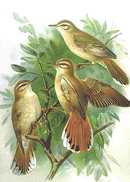
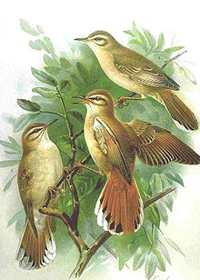

| Rufous Bush Robin | |
|---|---|
|  | |
| Art from Johann Friedrich Naumann | |
| Conservation status | |
| Binomial name | |
| Cercotrichas galactotes (Temminck, 1820) |
|
| Synonyms | |
|
Erythropygia galactotes |
| Rufous Bush Robin | |
|---|---|
|  | |
| Art from Johann Friedrich Naumann | |
| Conservation status | |
| Binomial name | |
| Cercotrichas galactotes (Temminck, 1820) |
|
| Synonyms | |
|
Erythropygia galactotes |
The Rufous Bush Robin (Cercotrichas galactotes), also called the Rufous-tailed Scrub Robin or Rufous Bush Chat, is a small member of the flycatchers. It breeds around the Mediterranean and east to Pakistan. It also breeds south of the Sahara from the Sahel region east to Somalia; these birds are sometimes considered to be a separate species, African Scrub Robin (C. minor). It is partially migratory, wintering in east Africa and India. This is a very rare visitor to northern Europe.
This is a bird of dry open country with bushes and shrubs. It builds its nest in a bush; three to five eggs is a typical clutch.
The Rufous Bush Robin is larger than the European Robin. It has brown upper parts, whitish under parts, and a prominent whitish eye-stripe. The western race has a paler, warmer brown back than birds in southeast Europe and Asia.
The long rufous tail is frequently fanned, showing the black and white tips of the tail feathers. All plumages are similar.
These birds feed on insects mostly caught on the ground. Their clear thrush-like song has a sad tone.

{kind=link}